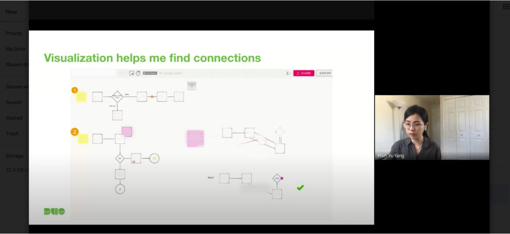

Duo Security
2020 Summer Internship in Single Sign-on (SSO) team. I created a prototype that effectively improves the onboarding experience of SSO.
View Demo
Overview
Time
May - Aug. 2020
Role
Product Design Intern
Type
Summer internship, remote due to COVID-19
Team
Product managers, Marketing manager, Design Manager, SSO Engineers
Methods & Tools
Methods
Product thinking, Product research, Interaction design, Project planning, Visual design
Tools
Marvel, Sketch, Abstract, Mural, Pen & paper
Success Metrics
Monthly active users, Click-through rate, Engagement (still collecting)
Quick facts
Led
2
projects
Impact
500,000+
users
Worked with
10+
Colleagues
Problems
Project 1 Problem
Configuring SSO is a complicated process for our users, which requires lots of steps among different web pages.
The first project is a product prototype, now published on Duo.com. This interactive prototype aims to serve the admin user to help them understand the process of configuring Duo's Single Sign-on (SSO).
Skills: prototyping, user interview, communication among stakeholders, project management.
Project 2 Problem
Integration process with Microsoft needs improvements on the process and requires more research about technical limitations.
The second project is a research-based ideation for new product integration. Due to NDA, I can't disclose screenshots or contents about the project.
Skills: competitor analysis, held a presentation to update my findings and suggestions to the SSO team, design concepts ideation.
Introduction
Single Sign-on
Single Sign-on is a service to help streamline the sign-in process for end-users
because users only need to remember one set of credentials and log in once to access other dozens of applications.

Disclaimer
Unfortunately, this internship is protected by NDA. Therefore, I won’t be able to describe details about my projects.
Project 1
Problem Space
Configuring SSO is a complicated process for our users, which requires lots of steps among different web pages.
One of my main deliverables is to create an interactive product flow demo that will be accessed and used by over 500,000 users from Duo and Cisco and eventually be demonstrated to the external clients.
Stakeholder Involvement
Through regular meetings with stakeholders, I found valuable resources for the project and was directed to the right people for insights.
In 2 months, I steered 3 Stakeholder meetings with PMs and Marketing Managers to update my progress.
User Interview
Introduced by stakeholders, I first interviewed 5 internal users, who are our engineers and heavy users of all product demo.
and they are closely working with our Duo clients, so they know what's clients' requests.

Synthesis & Next Actions
Synthesized their feedback, 7 key actions emerged to help define the scope and direction of the prototype demo.
According to the interviews, I prioritized 3 to 4 key points and design inspirations for the product demo.
Findings
Found the most important elements for an effective demo: conversational blobs
Iterations
20+ iterations for the prototype to find the right style that's compatible with Duo's design and legible across multiple different pages.
Then there is a stream of 20+ iterations of the product demo. I worked with the principle visual designer to iterate through the final version.

Reusable Components
Initiated the idea of a design system for demo prototype and created reusable components for scalability.
I also created a design system for the product demo composed of reusable components and can be maintained more easily for future designers.
Project 2
Problem Space
Integration process with Microsoft needs improvements and requires more research for technical limitations.
My second deliverable is research and ideation for a new product planning which is scheduled on the product roadmap already.
Technical Research
Studied technical documents to locate where the issue could be.
To understand more of the domain problem, I studied Microsoft technical documents thoroughly and located where the problem may be with the help of our SSO engineers.
Presenting my findings with the team
Competitor Analysis
With an extensive product competitor analysis, I brought back insights into the team and proposed 7 key actions we could take.
3
Features to consider
2
Things to avoid
2
Design inspirations
Ideation
Based on the competitor analysis, I conceptualized several ideas for the new integration.
And the rest is the story.
Takeaways
Communication, communication and communication
Among all of the learnings in the summer, communication is my biggest takeaway. Why? As a designer working in a team, communication, to some points, has become even more important than hard design techniques because sharing information to teammates effectively and correctly is the key to create values, not only for the company but also for ourselves.
Being aware of sharing work for feedback, early
At school, we always learned the concept of getting feedback early to iterate on ideas fast and effective. However, according to G.I. Joe Fallacy, knowing is merely halfway as putting something into practice. Looking back now, I just realized how different it is to consciously practice it at work.
Although I did include as many others as possible to get feedback, in the end, I wish I had included others earlier in the development stage. In reflection, I realized getting feedback wasn’t primed in my mind when I started design projects at Duo. Instead, I was occupied to get to know the product, the technical knowledge and the working culture.
Product thinking
At school, we learn design thinking methodologies and user-centered design techniques. However, we never learned how to strategize product-market fit, in which product design also plays a huge part. In this internship, I had the chance to step outside of design and think from a holistic perspective. I get to see where design plays its part in shaping the product's vision and how the market sculpts our products. This strategic thinking in product design is one of the most valuable experiences I obtained in the internship.


{kind=link}